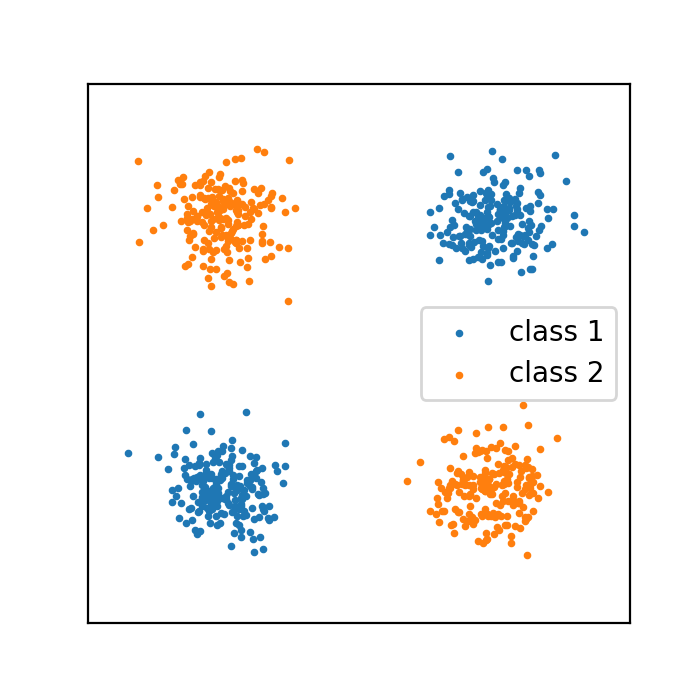

class: center, middle # Machine learning models Pierre Ablin .footnote.tiny[Credits: many contents and figures are borrowed from the scikit-learn [mooc](https://github.com/inria/scikit-learn-mooc/) and scipy [lecture notes](https://scipy-lectures.org/packages/scikit-learn/index.html).] --- # Foreword: Python loops are slow ```python x = np.randn(1000) s = 0. for i in range(1000): s += x[i] ``` At the line `s += x[i]`, python not only adds a few numbers. It does type checking, interpretation... ** Huge fixed cost ! ** Here, the fixed cost is much larger than the simple addition -> inefficient loop --- # Foreword: Python loops are slow ```python x = np.randn(1000, 1000) s = 0. for i in range(1000): s += np.sum(np.linalg.eigvalsh(x)) # Big computation ! ``` Here, this fixed cost is $\ll$ than the cost of the actual computation -> efficient loop --- .center[ # Recap from last time] --- # Classification Dataset: Iris Three species of iris: -- .center[ <br/> ] -- For each plant, we have 4 "features": Sepal length, Sepal width, Petal length, Petal width -- ### Goal: given features, predict the species --- # Classification Dataset: Iris ### Goal: given features, predict the species -- Example: - Sepal length = 5.1 cm - Sepal width = 3.5 cm - Petal length = 1.4 cm - Petal width = 0.2 cm -- ### Algorithm : "The species is Setosa" -- We want to build a function $f$ such that $f($Sepal length, sepal width, petal length, petal width$)= s$ where $s$ is the correct species. --- # Classification Dataset: Iris We want to build a function $f$ such that $f($Sepal length, sepal width, petal length, petal width$)= s$ where $s$ is the correct species. ## Today: how can we build such function? --- # Looking at the dataset Consider just two features: petal length (l) and petal width (w). We have $150$ samples: -- - Sample 1: species = Setosa, l = 1.5, w = 0.2 -- - Sample 2: species = Versicolor, l = 4.2, w = 1.5 -- - ... --- # Looking at the dataset Since we have only two features, each sample can be represented as a point in a two dimensional plane: -- .center[ <br/> ] --- # Looking at the dataset Since we have only two features, each sample can be represented as a point in a two dimensional plane: .center[ <br/> ] --- # Looking at the dataset Since we have only two features, each sample can be represented as a point in a two dimensional plane: .center[ <br/> ] --- # Looking at the dataset Since we have only two features, each sample can be represented as a point in a two dimensional plane: .center[ <br/> ] --- # Looking at the dataset Since we have only two features, each sample can be represented as a point in a two dimensional plane: .center[ <br/> ] --- # A **classification** machine learning model... ... will take as input a **new** pair (petal length, petal width) and tell which species it belongs to. -- .center[ <br/> ] --- # A **classification** machine learning model... ... will take as input a **new** pair (petal length, petal width) and tell which species it belongs to. .center[ <br/> ] --- # A **classification** machine learning model... ... will take as input a **new** pair (petal length, petal width) and tell which species it belongs to. .center[ <br/> ] --- # A **classification** machine learning model... ... will take as input a **new** pair (petal length, petal width) and tell which species it belongs to. .center[ <br/> ] --- # A **classification** machine learning model... ... will take as input a **new** pair (petal length, petal width) and tell which species it belongs to. .center[ <img src="images/iris_9.png" style="width: 600px;" /> <br/> ] --- # A **classification** machine learning model... ... will take as input a **new** pair (petal length, petal width) and tell which species it belongs to. .center[ <img src="images/iris_10.png" style="width: 600px;" /> <br/> ] --- # A **classification** machine learning model... ... will take as input a **new** pair (petal length, petal width) and tell which species it belongs to. .center[ <br/> ] --- # A **classification** machine learning model... ... will take as input a **new** pair (petal length, petal width) and tell which species it belongs to. .center[ <br/> ] --- # A **classification** machine learning model... ... will take as input a **new** pair (petal length, petal width) and tell which species it belongs to. .center[ <br/> ] --- # A **classification** machine learning model... ... will take as input a **new** pair (petal length, petal width) and tell which species it belongs to. .center[ <br/> ] --- # A **classification** machine learning model... ... Assigns to each point in space a predicted class. It splits space into decision regions. .center[ <br/> ] --- # A **classification** machine learning model... ... Assigns to each point in space a predicted class. It splits space into decision regions. .center[ <br/> ] --- # Today: Usual ways to build these regions. .center[ <br/> ] --- # Regression dataset: Boston housing Goal: predict the median price of houses in suburbs of Boston given some characteristics (13 features) -- - Per capita crime rate - Average number of rooms - Population employment - Level of nitric oxide concentration in the air - ... -- A model takes all these inputs and predicts the median price: **regression** --- # Illustration in 1-D To visualize the data, we can plot the target (price) against one feature (e.g. crime rate): .center[ <br/> ] --- # Illustration in 1-D To visualize the data, we can plot the target (price) against one feature (e.g. crime rate): .center[ <br/> ] --- # Illustration in 1-D To visualize the data, we can plot the target (price) against one feature (e.g. crime rate): .center[ <br/> ] -- There is a clear trend, but perfect prediction of the target is impossible --- # Illustration in 1-D A machine learning model would try to predict the target from the feature: .center[ <br/> ] --- # Illustration in 2-D Using two features, we can visualize each sample as a point in 2-D, and associate the **target** to a **color** .center[ <br/> ] --- # Illustration in 2-D A machine learning model associates each point with a predicted value .center[ <br/> ] --- # Today: Linear regression .center[ <br/> ] --- # Linear models --- # Linear models Linear models for **classification** with two classes Features: $x = (x_1, \dots, x_p)$ -- Model coefficients: $(w_1, \dots, w_p)$ and bias $b$ -- Prediction - $x$ is from class 1 if $w_1 \times x_1 + \cdots + w_p \times x_p + b > 0$ - $x$ is from class 2 if $w_1 \times x_1 + \cdots + w_p \times x_p + b < 0$ --- # Linear models Linear models for **regression** Features: $x = (x_1, \dots, x_p)$ -- Model coefficients: $(w_1, \dots, w_p)$ and bias $b$ -- Prediction - $y\simeq w_1 \times x_1 + \cdots + w_p \times x_p + b$ --- # Linear models Corresponds to drawing a line / plane between points .center[ <br/> ] --- # Linear models Corresponds to drawing a line / plane between points .center[ <br/> ] --- # Linear models Corresponds to drawing a line / plane between points .center[ <br/> ] -- - Versicolor if $2.8 \times$ length $+2.4 \times$ width $-17.6 < 0$ - Virginica otherwise --- # Linear models: use case Linear models are extremely simple. Cannot separate such dataset: .center[  <br/> ] Widely used when the number of samples is **not** much larger than number of features --- # Linear models and overfit Despite their simplicity, linear models **can** overfit, especially when there are not enough samples. -- In general, if the number of samples $n$ is $\leq$ number of features $p$, you can always find linear coefficients such that the prediction is perfect on each sample -- ** Even if the dataset is pure noise** -- In 2-d, if you only have $2$ points, you can always separate them with a line. --- # Linear models and overfit ## Example: Target $y$: SP 500 index in the last 3 days $y = (4532, 4470, 4356)$ -- 3 features: - Temperature in Paris in the last 3 days: $x_1 = (4, 2, 3)$ -- - Height of the tide in Brest: $x_2 = (5.62, 5.90, 6.26)$ -- - Number of students in this class $x_3 = (18, 15, 17)$ -- You can check that: $$ y = -1757 \times x_1 -1355\times x_2 + 1065\times x_3 $$ --- # Least squares How do you estimate the regression coefficient? $$\min_{w} \frac12 \| Xw - y\|^2$$ Optimization ! --- # Least squares How do you estimate the regression coefficient? $$\min_{w} \frac12\| Xw - y\|^2 = f(w)$$ Optimization ! Solution: $\frac{\partial f}{\partial w_j} = x_j^{\top}(Xw - y)$ $\nabla f(w) = X^{\top}(Xw - y)$ --- # Least squares How do you estimate the regression coefficient? $$\min_{w} \frac 12\| Xw - y\|^2 = f(w)$$ Optimization ! Solution: $\nabla f(w) = X^{\top}(Xw - y)$ so $$ w^* = (X^{\top}X)^{-1}X^{\top}y $$ Pseudo inverse $X^{\dagger} = (X^{\top}X)^{-1}X^{\top} \in \mathbb{R}^{p\times n}$ --- # Regularization against overfit Coefficients have too much variability if not enough samples: **Reduce them** Ridge regression: $$\min_{w}\frac12 \| Xw - y\|^2 + \frac \lambda 2 \|w\|^2$$ $\lambda > 0$ is a hyperparameter --- # Ridge regression $$\min_{w}\frac12 \| Xw - y\|^2 + \frac \lambda 2 \|w\|^2 = f(w)$$ Solution: --- # Ridge regression $$\min_{w} \frac12\| Xw - y\|^2 + \frac \lambda 2 \|w\|^2 = f(w)$$ Solution: $\nabla f(w) = X^{\top}(Xw -y) + \lambda w$ So: $$ w^* = (X^{\top}X + \lambda I_p)^{-1}X^{\top}y $$ - Defined even for $n > p$ - Used everywhere in applied science - $\lambda$ can be set with cross validation --- # Thanks !